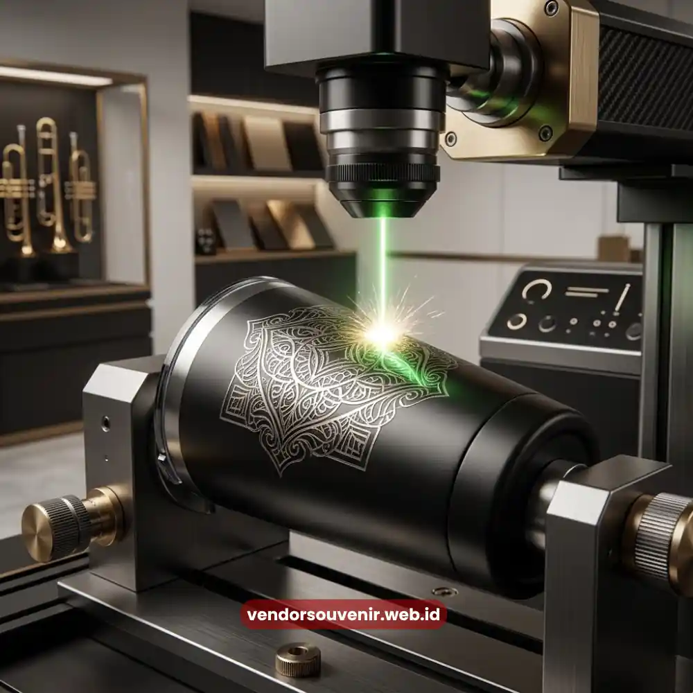

Daftar Isi
Custom logo souvenir onboarding kit adalah proses mencetak identitas visual perusahaan pada setiap item souvenir yang diberikan kepada karyawan baru, menggunakan teknik seperti sablon, bordir, atau laser engraving.
Proses ini menjadi elemen penentu yang membedakan souvenir generik dengan souvenir yang benar-benar mencerminkan brand perusahaan.
- Custom logo membuat souvenir onboarding kit terasa lebih personal dan profesional.
- Teknik cetak dipilih berdasarkan jenis material dari masing-masing item souvenir.
- Konsistensi warna dan posisi logo penting dijaga di seluruh item dalam satu paket.
- Konsultasi desain sejak awal membantu memastikan hasil cetak sesuai brand guideline.
Mengapa Custom Logo Penting pada Souvenir Onboarding Kit?
Custom logo penting pada souvenir onboarding kit karena berfungsi sebagai penanda identitas yang membuat karyawan baru langsung mengenali barang tersebut sebagai bagian dari brand perusahaan.
Tanpa logo, souvenir hanya menjadi barang umum tanpa nilai tambah dari sisi branding.
Kehadiran logo pada setiap item juga memperkuat konsistensi visual perusahaan di berbagai titik interaksi, mulai dari ruang kerja hingga aktivitas karyawan di luar kantor.
Setiap kali tumbler atau tote bag berlogo digunakan, secara tidak langsung terjadi pengulangan paparan brand yang membantu memperkuat brand recall, baik bagi karyawan itu sendiri maupun orang di sekitarnya.
Selain aspek branding, custom logo juga memberikan kesan bahwa perusahaan memperhatikan detail dalam setiap proses, termasuk hal-hal kecil seperti souvenir untuk karyawan baru.
Kesan ini turut membangun persepsi positif terhadap budaya kerja perusahaan sejak awal masa onboarding.
Apa Saja Teknik Cetak Logo yang Umum Digunakan pada Souvenir?
Teknik cetak logo yang umum digunakan pada souvenir onboarding kit meliputi sablon, bordir, heat transfer, dan laser engraving, dengan pemilihan teknik disesuaikan dengan jenis material barang.
Setiap teknik memiliki karakteristik daya tahan dan tampilan akhir yang berbeda.
Sablon umumnya digunakan pada material kain seperti tote bag dan kaos, karena mampu menghasilkan warna logo yang tajam dengan biaya produksi yang relatif efisien untuk pemesanan dalam jumlah besar.
Bordir lebih sering dipilih untuk topi, kemeja, atau jaket, karena memberikan tekstur timbul yang terkesan lebih premium dan tahan lama dibanding sablon.
Heat transfer menjadi pilihan yang fleksibel untuk desain logo dengan banyak warna atau gradasi, terutama pada material yang tidak cocok disablon langsung.
Sementara itu, laser engraving umumnya digunakan pada material keras seperti tumbler stainless, pulpen logam, atau gantungan kunci, karena menghasilkan cetakan logo yang sangat tahan lama dan tidak mudah pudar meski sering terkena gesekan atau air.
Pemilihan teknik yang tepat sangat berpengaruh terhadap ketahanan logo dalam jangka panjang.
Souvenir dengan teknik cetak yang kurang sesuai berisiko cepat pudar, yang justru dapat menurunkan kesan profesional dari brand perusahaan.

Laser Engraving Memberikan Kesan Elegan dan Tahan Lama pada Tumbler Stainless
Bagaimana Proses Konsultasi Desain Logo pada Souvenir Dilakukan?
Proses konsultasi desain logo pada souvenir umumnya dimulai dari pengumpulan brand guideline perusahaan, dilanjutkan dengan penyesuaian ukuran dan posisi logo pada masing-masing item, sebelum akhirnya masuk ke tahap produksi massal.
Tahapan ini penting untuk memastikan hasil akhir konsisten dengan identitas visual perusahaan.
Pada tahap awal, tim desain biasanya meminta file logo dalam format vektor agar kualitas cetak tetap tajam meski diperbesar atau diperkecil sesuai ukuran barang.
Selanjutnya, dilakukan simulasi desain pada mock up digital untuk setiap item souvenir, sehingga perusahaan dapat melihat gambaran hasil akhir sebelum proses produksi dimulai.
Setelah desain disetujui, barulah proses produksi berjalan dengan teknik cetak yang telah disepakati.
Pada tahap ini, quality control menjadi bagian penting untuk memastikan warna, ukuran, dan posisi logo konsisten di setiap unit, terutama untuk pemesanan dalam jumlah besar yang melibatkan puluhan hingga ratusan karyawan baru sekaligus.
Vendor Souvenir menyediakan layanan konsultasi desain logo tanpa biaya tambahan bagi perusahaan yang memesan souvenir onboarding kit, sehingga proses penyesuaian brand guideline dapat berjalan lebih efisien.
Hal yang Perlu Diperhatikan agar Hasil Custom Logo Maksimal
Beberapa hal perlu diperhatikan agar hasil custom logo pada souvenir onboarding kit maksimal, termasuk kualitas file logo, pemilihan warna yang sesuai brand guideline, serta pengujian hasil cetak pada sampel sebelum produksi massal dilakukan.
Kualitas file logo menjadi faktor dasar yang menentukan ketajaman hasil cetak, terutama untuk logo dengan detail rumit.
Warna logo juga perlu disesuaikan dengan kode warna resmi perusahaan, baik dalam format CMYK maupun Pantone, agar hasil cetak tidak meleset dari identitas visual yang sudah ditetapkan.
Pengujian pada sampel sebelum produksi massal juga sangat dianjurkan, khususnya untuk pemesanan dalam jumlah besar.
Langkah ini membantu menghindari kesalahan cetak dalam skala besar yang berpotensi menimbulkan pemborosan anggaran maupun waktu produksi tambahan.

Vendor Souvenir Siap Membantu Anda Menghasilkan Kualitas Terbaik
Pertanyaan yang Sering Diajukan (FAQ)
Apakah semua jenis souvenir bisa dicustom dengan logo perusahaan?
Sebagian besar jenis souvenir dapat dicustom dengan logo, meski teknik cetak yang digunakan berbeda tergantung jenis material masing-masing barang.
Teknik cetak apa yang paling tahan lama untuk logo perusahaan?
Laser engraving pada material logam atau stainless umumnya dikenal paling tahan lama karena hasil cetaknya menyatu langsung dengan permukaan barang.
Apakah proses custom logo membutuhkan waktu tambahan dalam produksi?
Ya, proses custom logo membutuhkan tahap desain dan simulasi sebelum produksi massal, sehingga sebaiknya dipersiapkan lebih awal agar tidak terburu-buru.
Maroon Souvenir
Partner Corporate Gift terpercaya di Indonesia. Berpengalaman melayani ratusan perusahaan sejak 2018.
Lihat Portofolio Kami